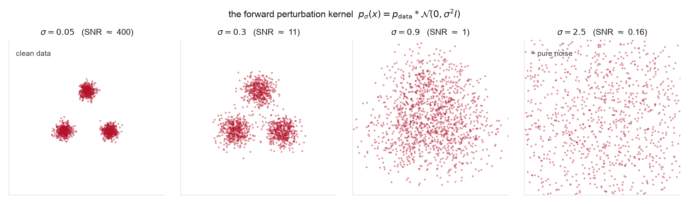
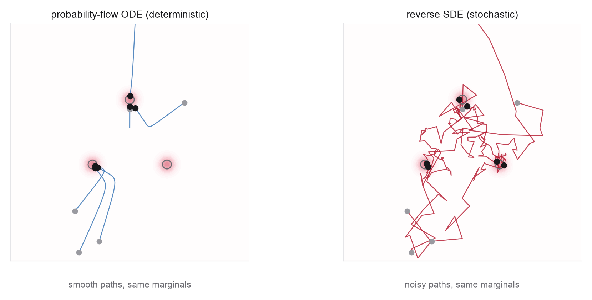
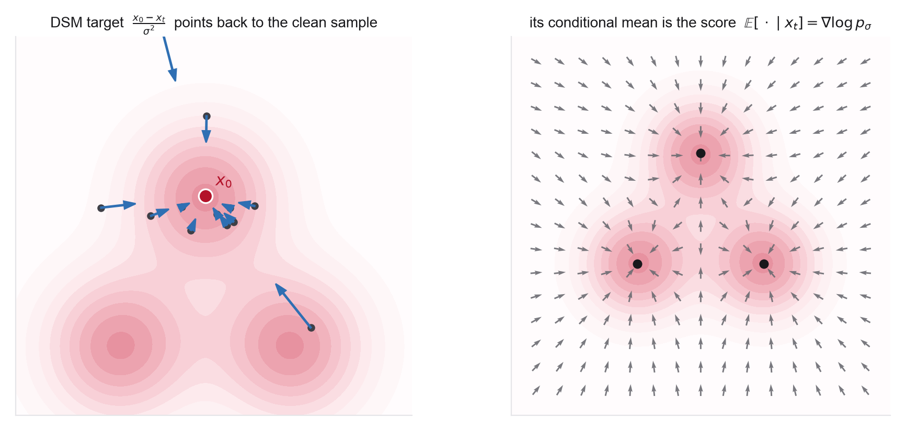
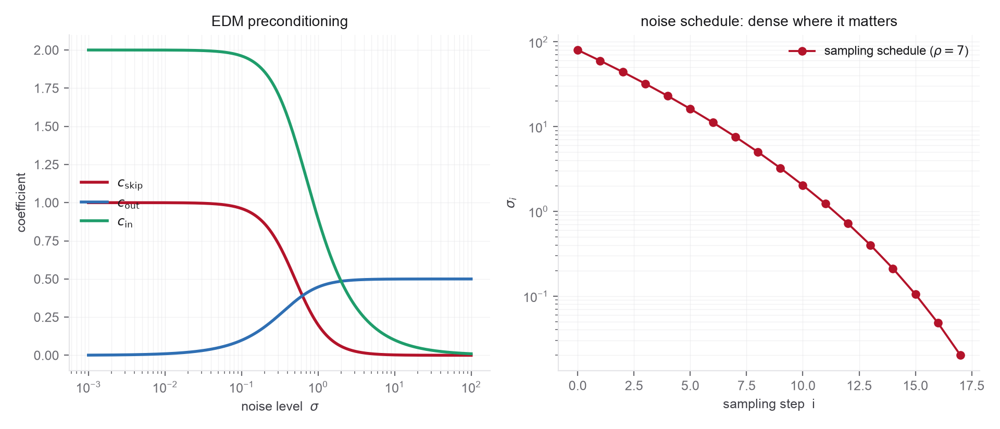

These notes condense the Week 2 readings into the ideas you actually need, organized by concept rather than by paper. Every section names where it comes from and which problem puts it to work. A companion notebook reproduces every figure and the live sampler below, so you can change the noise schedule, the sampler, or the target and rerun. Notation follows the MIT notes and continues directly from Week 1, with the score \(\nabla_x\log p_t\) replacing last week's velocity field as the learned object.
1From flows to diffusions, the one new ingredient
Week 1 generated samples by deterministic transport: integrate a velocity field and the base density flows onto the data. Diffusion changes one thing. Instead of choosing a transport and learning its velocity, we fix a forward process that destroys structure by adding noise, and learn to run it backward. The object the network learns is no longer a velocity but the score, the gradient of the log-density of the noised data,
Everything else from Week 1 survives. Sampling is still integrating a differential equation; divergence, solver order, and trajectory geometry still govern cost and accuracy. The figure that opened the overview is the whole week in one line: a forward process blurs data toward a Gaussian prior, the score points back toward where mass concentrates, and the reverse dynamics built from that score regenerate the data.
2The forward process and its perturbation kernel
The forward process is an SDE that pushes any data point toward noise. Two equivalent conventions appear in the readings. The variance-preserving (VP) form, used by DDPM, keeps the total variance near one and admits the closed-form marginal
The variance-exploding (VE) form, used by NCSN and EDM, leaves the data alone and simply adds noise of growing scale, so the marginal is the data distribution convolved with a Gaussian,
Either way the key object is the perturbation kernel: the noise level indexes a family of progressively smoother densities that interpolate from the data (sharp, multimodal) to a single wide Gaussian. This is the Week 1 Problem 1 smoothing, now a continuum. The signal-to-noise ratio falls monotonically along it, and that single scalar, not the particular VP/VE bookkeeping, is what matters.

3Reversing time: the reverse SDE and the probability-flow ODE
The pivotal fact, due to Anderson (1982), is that the time reversal of the forward diffusion is again a diffusion, and it is driven by the score. For a forward SDE \(\mathrm dx = f(x,t)\,\mathrm dt + g(t)\,\mathrm dw\), the reverse-time SDE is
integrated from the noise end back to the data end. The same forward marginals are also reproduced exactly by a deterministic ODE, the probability-flow ODE,
This is the bridge back to Week 1: the probability-flow ODE is an ordinary flow whose velocity is built from the score, so it transports density by the continuity equation, gives exact likelihoods through the instantaneous change of variables, and integrates with the same Euler/Heun/RK4 machinery. One trained score, two samplers. The reverse SDE re-injects noise at every step and can correct its own errors, which often helps sample quality; the ODE is deterministic, cheaper, invertible, and gives likelihoods, at the cost of being less forgiving. They share every time-marginal (exactly, with the true score and exact integration) but have entirely different path laws, and neither is a physical trajectory: an ODE path between modes is not a reaction mechanism and an SDE path is not a Langevin trajectory of the system.

The demo below runs both on a multi-well, molecule-like target whose perturbed score is known in closed form, so what you see is the exact reverse process, not a trained approximation. Toggle the sampler and watch the same noise cloud condense onto the three basins.
1,400 particles from a wide Gaussian, denoised down the EDM noise schedule with the exact mixture score. The probability-flow ODE moves every particle deterministically; the reverse SDE adds Brownian kicks. Turn on the score field to see the vectors the sampler is following.
4Learning the score: denoising score matching
The score of the noised data is not something we can read off the empirical distribution, but it has a free training signal. Denoising score matching (Vincent, 2011) replaces the intractable objective \(\mathbb E_{p_\sigma}\|s_\theta - \nabla\log p_\sigma\|^2\) with a tractable one. Corrupt a clean sample, \(x_\sigma = x_0 + \sigma\epsilon\), and regress the network onto the direction back to the clean point,
The per-sample target points from the noisy point straight back to its clean source. No single noisy point sits at the true score, but the minimizer of this loss is the conditional mean, and that conditional mean is the score of the noised density,
Equivalently the model can predict the noise \(\epsilon\) (DDPM's parameterization) or the clean sample \(x_0\) (the denoiser, the EDM parameterization); the three are linear reparameterizations of one another, related by Tweedie's formula \( \mathbb E[x_0\mid x_\sigma] = x_\sigma + \sigma^2\nabla\log p_\sigma(x_\sigma)\). This is the same conditional-expectation regression that defined flow matching in Week 1 Problem 5, just with a noised input.

5The EDM design space
Karras et al. observe that most of diffusion's moving parts are largely separable choices that had been tangled together. Pull them apart and each can be set on its own, though their best settings can still interact. Preconditioning wraps the raw network \(F_\theta\) so its inputs and targets stay unit-scale at every noise level,
with the coefficients fixed by requiring unit-variance inputs and targets given \(\sigma_{\mathrm{data}}\). At small \(\sigma\) the denoiser is nearly the identity (\(c_{\mathrm{skip}}\to1\)); at large \(\sigma\) it must predict the clean signal from almost pure noise (\(c_{\mathrm{skip}}\to0\)). The remaining knobs are the training noise distribution \(\ln\sigma\sim\mathcal N(P_{\mathrm{mean}},P_{\mathrm{std}}^2)\), the loss weighting that equalizes the gradient signal across noise levels, the time discretization \(\sigma_i = \big(\sigma_{\max}^{1/\rho} + \tfrac{i}{N-1}(\sigma_{\min}^{1/\rho}-\sigma_{\max}^{1/\rho})\big)^\rho\), and a second-order (Heun) sampler that reaches good samples in far fewer steps.

The lesson is the mindset, not the formulas: these are knobs tuned to the data, and the right settings for 3D molecular coordinates, with their own characteristic length scales, are not the image defaults. Problem 2 derives the preconditioning coefficients and asks what changes for molecules.
6The score is a force field
For physical systems the score is not an abstraction. If the data follow a Boltzmann distribution over full Cartesian configurations \(x\) at physical inverse temperature \(\beta_{\mathrm{phys}}=1/k_BT_{\mathrm{phys}}\),
then the score is exactly the physical force \(-\nabla U\), scaled by inverse temperature, and the intractable normalizer \(Z\) drops out under the gradient, which is precisely why score-based methods sidestep the partition function. One qualification: for a reduced or collective coordinate the corresponding object is a free energy / potential of mean force, so the score there is a mean force (with entropic and Jacobian contributions), not the microscopic atomic force. The picture to keep is annealing-like rather than literally thermodynamic: the forward process is an artificial Gaussianization (the endpoint is a reference Gaussian, not an ideal gas), and the diffusion noise \(\sigma\) is not a temperature. The annealed-Langevin sampler of NCSN makes the analogy explicit while remaining an artificial continuation in \(\sigma\).

The correspondence also exposes the hard part. A model that captures the shape of every basin can still get the relative weights of competing basins wrong, the analogue of a wrong free-energy difference, and no per-sample validity check will catch it. Multimodality, rare transitions, and basin populations are exactly where diffusion models for molecules succeed or fail.
7Equivariant diffusion for 3D molecules
Moving the machinery onto real 3D structures reintroduces the geometry of Week 1. A distribution over molecular geometries should be invariant to rigid rotations and translations: rotating a molecule does not change its probability. The clean way to get an invariant model is to make the denoiser equivariant,
so that an invariant Gaussian prior pushed through equivariant reverse dynamics yields an invariant model, the same invariant-base-plus-equivariant-map argument from Week 1. The molecular EDM builds \(D_\theta\) from an E(n)-equivariant graph network acting on relative positions, and runs the whole diffusion in the zero-center-of-geometry subspace (the arithmetic mean of the coordinates, not the mass-weighted center of mass) so translation invariance is handled by construction rather than learned. Because a distance-based network is also reflection-equivariant, the realized symmetry group is the full \(E(3)\) (built on \(O(3)\), which includes reflections); distinguishing a chiral molecule from its mirror image needs the smaller group \(SE(3)\).

The state space is the design choice that distinguishes the models. EDM diffuses atom coordinates and a continuous relaxation of atom types together; GeoDiff fixes the bonded graph and diffuses only coordinates; TargetDiff adds a fixed protein pocket as conditioning. All three rely on the same equivariance principle. Problem 4 builds a miniature of this end to end.
8Looking ahead, from a fixed path to a chosen one
The probability-flow ODE shows that diffusion is, underneath, a deterministic flow, exactly the Week 1 object. But its trajectories are inherited from a noising process and they curve, which is why sampling needs many steps. Week 3 asks why inherit the path at all. Flow matching chooses the interpolation between noise and data directly, the straight line being the simplest, and regresses the velocity onto it with the same conditional-expectation move used in this week's denoising loss. Diffusion becomes one curved member of a larger family, and straighter paths are what make few-step generation possible. The score you learned this week and the velocity you learn next are two coordinates on the same transport.
9One-page recap
- Fix a forward SDE that turns data into Gaussian noise. Its perturbation kernel is a ladder of smoothed densities indexed by signal-to-noise.
- The time reversal is again a diffusion driven by the score \(\nabla\log p_t\). The reverse-time SDE and the probability-flow ODE share all marginals.
- The probability-flow ODE is a Week 1 flow with velocity built from the score, so likelihoods and the continuity equation carry over.
- Denoising score matching regresses \(s_\theta\) onto \((x_0-x_\sigma)/\sigma^2\); its conditional mean is the exact score. Predicting \(\epsilon\), \(x_0\), or the score are reparameterizations (Tweedie).
- EDM separates the largely modular choices: preconditioning, noise distribution, loss weighting, discretization, and a second-order sampler.
- For Boltzmann data the score is the force field \(-\beta\nabla U\); the partition function drops out. Reverse diffusion is annealing.
- 3D molecular generation needs an equivariant denoiser, run in the zero-center-of-geometry subspace, so the model is invariant by construction.
- Diffusion's path is a fixed, curved choice. Week 3 chooses the path directly and learns a velocity, which is what makes sampling fast.